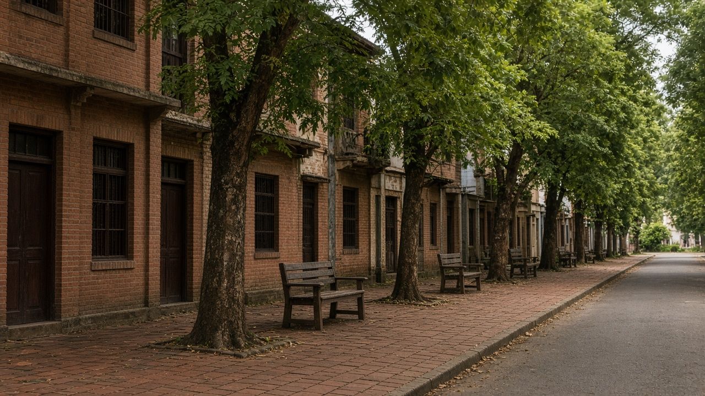
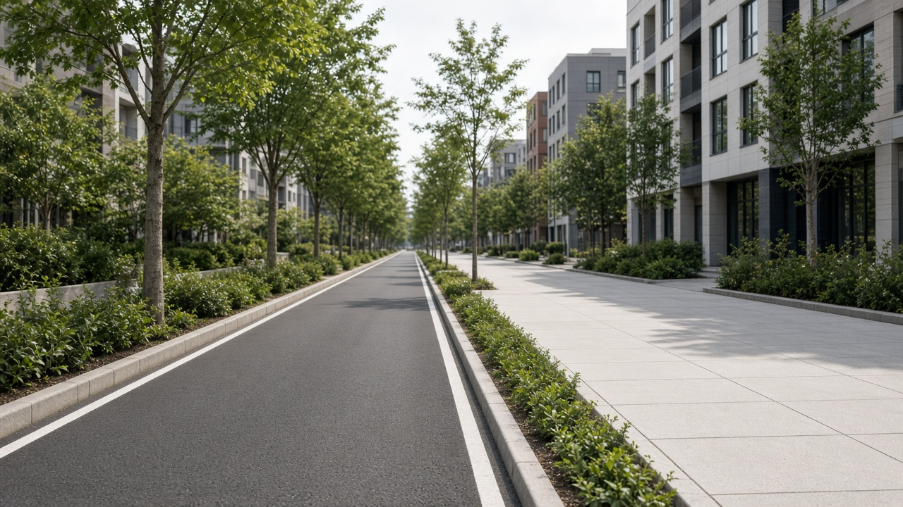
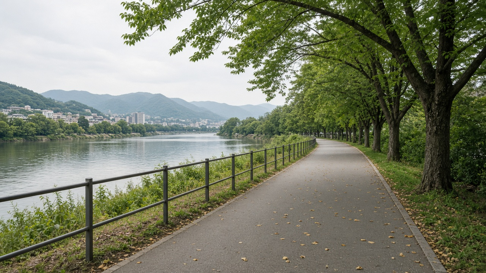

Walkable Streets and Cycling Infrastructure
Published on August 20, 2026

Walkable streets treat walking as the primary way people reach shops, schools, and buses, not as leftover space beside moving traffic. Continuous sidewalks, frequent crossings, shade, seating, and lighting allow children, elders, and people with disabilities to move without negotiating parked motorcycles or open drains. Block length, building frontage, and kerb radii decide whether a street invites lingering or speeding. When ground floors have doors and windows rather than blank walls, pedestrians feel watched and safer. In historic cores of Bhaktapur or Pokhara lakeside lanes, the lesson is already visible: narrow, connected paths with mixed activity outperform wide carriageways that isolate people on the edges.
Cycling infrastructure works when it is physical, connected, and respected at junctions. Painted symbols on fast roads rarely protect riders; separated tracks, protected intersections, and secure parking at workplaces and markets do. Networks must link homes to jobs and schools, not stop at a single showcase boulevard. Women and older riders use bikes only when speeds of motor traffic fall and lighting continues after dusk. Cargo cycles and cycle-rickshaws can move goods in dense neighbourhoods if loading bays exist and steep shortcuts are graded. Maintenance is policy: blocked tracks, broken ramps, and monsoon potholes quickly return people to motorcycles.
Cities reallocate space by narrowing travel lanes, removing through-traffic from residential streets, and giving remaining width to walking, cycling, and trees. Speed limits of thirty kilometres per hour in neighbourhoods, camera enforcement at dangerous crossings, and school-street closures at peak hours cut injuries faster than awareness campaigns alone. Municipalities in Nepal can start with complete-street retrofits on market roads, riverfront paths that double as commuting routes, and parking reform that stops sidewalks from becoming vehicle storage. Success is counted in walking and cycling mode share, crash reductions, and whether a twelve-year-old can reach school without a guardian driving.

हिँड्न मिल्ने सडकले पैदल यात्रालाई पसल, विद्यालय र बस पुग्ने मुख्य तरिका मान्छ, गुड्ने ट्राफिक छेउको बाँकी ठाउँ होइन। निरन्तर फुटपाथ, बारम्बार क्रसिङ, छाया, बस्ने ठाउँ र बत्तीले बालबालिका, वृद्ध र अपाङ्गता भएका व्यक्तिलाई पार्क गरिएको मोटरसाइकल वा खुला नाला नछेडी हिँड्न दिन्छ। खण्ड लम्बाइ, भवन अगाडि र कर्ब त्रिज्याले सडक अल्झ्याउँछ कि गति बढाउँछ भन्ने तय गर्छ। तल्लो तलामा ढोका र झ्याल भए पैदल यात्री हेरिएको र सुरक्षित महसुस गर्छन्। भक्तपुरको ऐतिहासिक केन्द्र वा पोखरा तालछेउ गल्लीमा पाठ देखिन्छ: मिश्रित गतिविधि भएका साँघुरो जोडिएका बाटो फराकिला सडकभन्दा राम्रा हुन्छन् जसले मानिसलाई किनारामा अलग पार्छन्।
साइकल पूर्वाधार तब काम गर्छ जब भौतिक, जोडिएको र चौबाटोमा सम्मानित हुन्छ। तेज सडकमा रंगिएका चिह्नले सवार जोगाउँदैनन्; छुट्याइएका ट्र्याक, सुरक्षित चौबाटो र कार्यस्थल तथा बजारमा सुरक्षित पार्किङले जोगाउँछन्। सञ्जालले घरलाई रोजगारी र विद्यालयसँग जोड्नुपर्छ, एउटा प्रदर्शन सडकमा रोकिन्नु हुँदैन। महिला र वृद्ध सवार मोटर गति घट्दा र साँझपछि बत्ती रहँदा मात्र साइकल प्रयोग गर्छन्। माल साइकल र साइकल रिक्शाले सघन छिमेकमा सामान बोक्न सक्छन् यदि लोडिङ ठाउँ छ र अग्ला छोटो बाटो सम्याइएका छन्। मर्मत नीति हो: थुनिएका ट्र्याक, भाँचिएका र्याम्प र मनसुन खाल्डाले मानिसलाई चाँडै मोटरसाइकलतिर फर्काउँछन्।
शहरले यात्रा लेन साँघुरो पारेर, आवासीय गल्लीबाट छिचोल्ने ट्राफिक हटाएर र बाँकी चौडाइ पैदल, साइकल र रूखलाई दिएर ठाउँ पुनर्वितरण गर्छन्। छिमेकमा तीस किलोमिटर प्रति घण्टा सीमा, खतरनाक क्रसिङमा क्यामेरा र विद्यालय सडक बन्दले चेतना अभियानभन्दा छिटो चोट घटाउँछन्। नेपालका नगरले बजार सडकमा पूर्ण-सडक सुधार, आवतजावत बाटो बन्ने नदीकिनार पथ र फुटपाथलाई सवारी भण्डार बन्न नदिने पार्किङ सुधारबाट सुरु गर्न सक्छन्। सफलता पैदल र साइकल यात्रा हिस्सा, दुर्घटना कमी र बाह्र वर्षको बालक अभिभावक नचलाई विद्यालय पुग्न सक्छ कि भन्नेमा गनिन्छ।

चलने योग्य सड़कें पैदल यात्रा को दुकान, विद्यालय और बस तक पहुँचने का मुख्य तरीका मानती हैं, चलते ट्रैफ़िक के किनारे बचा स्थान नहीं। निरंतर फ़ुटपाथ, बार-बार क्रॉसिंग, छाया, बैठने की जगह और रोशनी बच्चों, वृद्धों और विकलांगता वाले लोगों को खड़ी मोटरसाइकिल या खुली नाली से बिना टकराए चलने देती हैं। खंड लंबाई, इमारत का अगला भाग और कर्ब त्रिज्या तय करते हैं कि सड़क ठहरने को बुलाती है या रफ़्तार बढ़ाती है। निचली मंज़िल पर दरवाज़े और खिड़कियाँ हों तो पैदल यात्री देखे जाने और सुरक्षित महसूस करते हैं। भक्तपुर के ऐतिहासिक केंद्र या पोखरा ताल किनारे गलियों में पाठ दिखता है: मिश्रित गतिविधि वाली संकरी जुड़ी राहें चौड़ी सड़कों से बेहतर होती हैं जो लोगों को किनारे पर अलग कर देती हैं।
साइकिल अवसंरचना तब काम करती है जब भौतिक, जुड़ी और चौराहों पर सम्मानित हो। तेज़ सड़क पर रंगे चिह्न सवार नहीं बचाते; अलग ट्रैक, सुरक्षित चौराहे और कार्यस्थल तथा बाज़ार में सुरक्षित पार्किंग बचाते हैं। नेटवर्क को घरों को रोजगार और विद्यालयों से जोड़ना चाहिए, एक प्रदर्शन मार्ग पर नहीं रुकना चाहिए। महिलाएँ और वृद्ध सवार मोटर गति घटने और शाम के बाद रोशनी रहने पर ही साइकिल चलाते हैं। माल साइकिल और साइकिल रिक्शा सघन मोहल्लों में सामान ढो सकते हैं यदि लोडिंग जगह हो और ऊँची छोटी राहें समतल हों। रखरखाव नीति है: थुनी ट्रैक, टूटे रैंप और मानसून गड्ढे लोगों को जल्दी मोटरसाइकिल की ओर लौटा देते हैं।
शहर यात्रा लेन संकरी कर, आवासीय गलियों से छेदक ट्रैफ़िक हटाकर और शेष चौड़ाई पैदल, साइकिल और पेड़ों को देकर जगह पुनर्वितरित करते हैं। मोहल्लों में तीस किलोमीटर प्रति घंटा सीमा, खतरनाक क्रॉसिंग पर कैमरा और विद्यालय सड़क बंद करना जागरूकता अभियान से तेज़ चोट घटाते हैं। नेपाल की नगरपालिकाएँ बाज़ार सड़कों पर पूर्ण-सड़क सुधार, आवागमन मार्ग बनने वाले नदीतट पथ और फ़ुटपाथ को वाहन भंडार बनने से रोकने वाले पार्किंग सुधार से शुरू कर सकती हैं। सफलता पैदल और साइकिल यात्रा हिस्सेदारी, दुर्घटना कमी और इस बात में गिनी जाती है कि बारह वर्ष का बच्चा अभिभावक चलाए बिना विद्यालय पहुँच सकता है या नहीं।